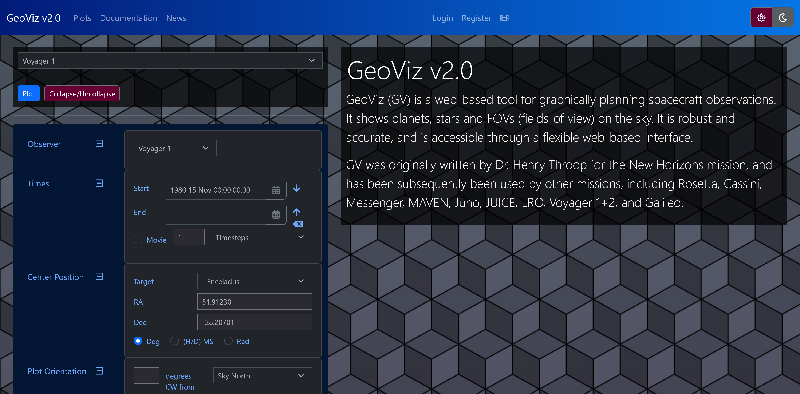
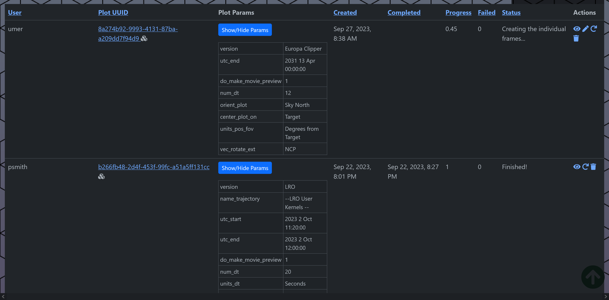
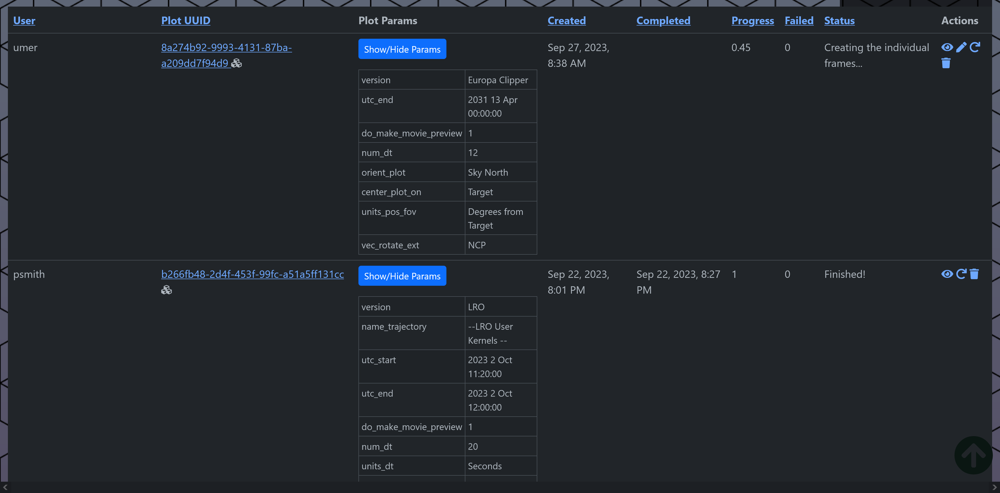
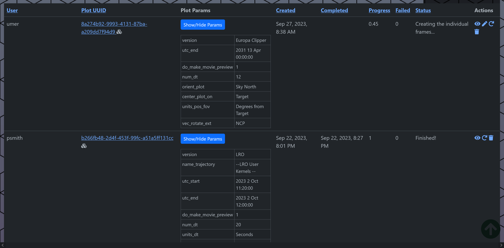
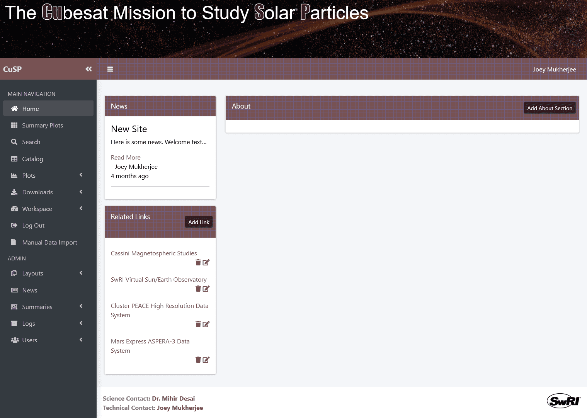
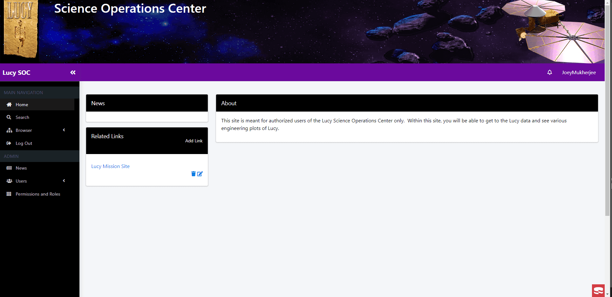
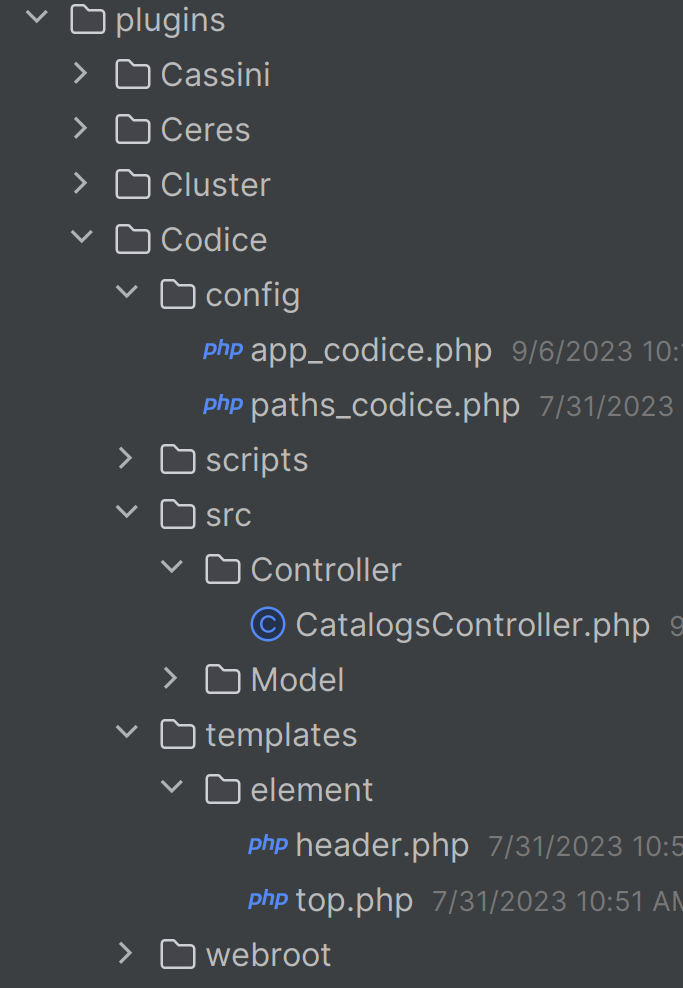
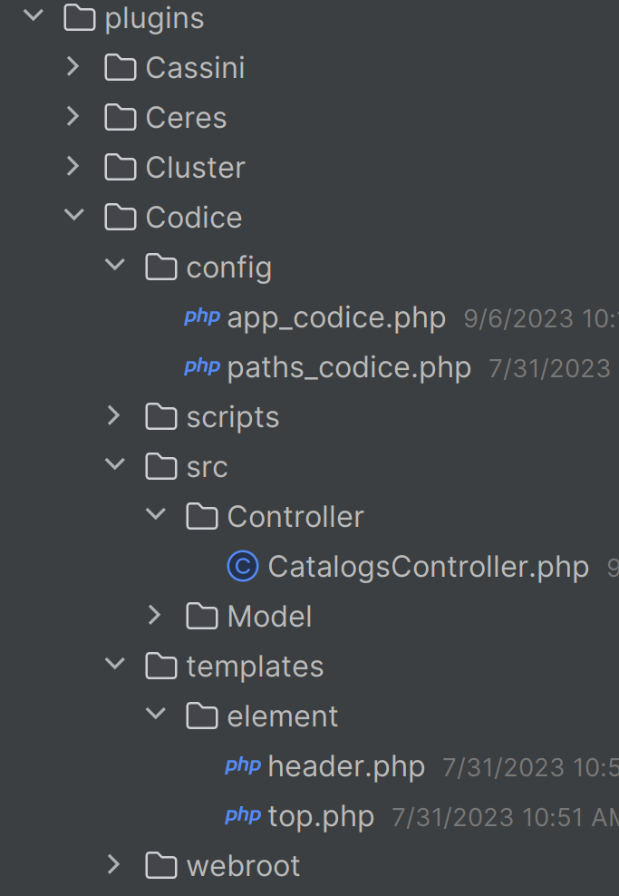

Agile Deployment of CakePHP Web Applications in a Hybrid, Hybrid Kubernetes Cluster
Umer SalmanCakeFest 2023
Intro
Space probe sensors are higher precision and take more readings per second than ever before
What does that mean?
It means we need a better, faster, and more robust way
Rather than moving the data to the software (e.g. Excel files, CSVs)...
Let's move the software to the data
Prior CakeFest Talks
on this topicAgenda
- About me
- SwRI Space Science
- What we needed
- What we accomplished
- Tools
- What's next?
- Wrap-up
- Q&A
Who am I?
Umer Salman, @umer936
-
 , San Antonio, TX
, San Antonio, TX
-
BS ECE from

- PHP since the Nintendo DSi

- Robotics and cybersecurity
- Also like cars, tropical weather, building things
(DIY, arts and crafts, etc.)

SwRI Space Science
- Been using CakePHP since the 1.x versions
- 45+ CakePHP Projects supporting Space Science Operations
-
Constantly improving with CakePHP ecosystem
- Plugins: User accounts, Queues
- Overrides
- Modularization
- Bootstrap
- Integrate with IDL, Python, and other space science codebases
GeoViz v2.0


 


Hot Plasma Composition Analyzer (HPCA)

Generic Conference

Generic Conference

WebSOC (Science Operations Center)




Cloud Terminology
- Docker / containerization / podman
- Galley - Alex Mayer CakePHP plugin
- Kubernetes helmsman (k3s)
- Amazon Web Services (AWS)
- AWS Simple Storage Service (S3)
- Microservices
| Description | Pros | Cons | |
|---|---|---|---|
| Bare-metal | Apache/nginx, MySQL, etc. |
|
|
| Cloud (AWS/GCP/Azure/Oracle Cloud) | Using a cloud provider |
|
|
| Docker, WAMPP, XAMPP, Laragon | Idea of a separate environs per app |
|
|
| Docker-compose (Galley/Devilbox) | docker-compose.yml to keep services separate |
|
|
| Hybrid Kubernetes | Containerize everything. Use AWS + on-prem |
|
|
| Hybrid-hybrid | Containerize some things, deploy some places |
|
|
Containers
-
SDDAS (plotting library) Container
- Development Container
- Ubuntu
- Needs GUI
-
Web pod - based on Galley
- Ubuntu
- Nginx
- PHP
- CakePHP app
- npm?
- Messaging Container - rabbitmq
- Database Container - MySQL/Postgres
- NodeJS?
- Data Processing Container - Python
-
Visualization Container
- SDDAS
- Python
- Certs Volume
- Workerspace Volume
Hybrid, hybrid setup
Start with Galley!
#!/usr/bin/env bash
DEBUG=true
SITE_KEY="WhiteLabel" # Cassini Mars Vseo Cluster Enpa WhiteLabel Merit Lucy
# used for cake and docker-compose.yml
DB_HOST="mysql" # mysql for docker, localhost for testserver, etc
DB_DATABASE="sitename" # vseo
DB_USERNAME="root"
DB_PASSWORD="XXXXXX"
# These are what we use in docker-compose.yml
RABBITMQ_USERNAME="myuser"
RABBITMQ_PASSWORD="mypassword"
Pro-tip:
ln -s config/.env .env
/*
* See https://github.com/josegonzalez/php-dotenv for API details.
*
* Uncomment block of code below if you want to use `.env` file during development.
* You should copy `config/.env.example` to `config/.env` and set/modify the
* variables as required.
*
* The purpose of the .env file is to emulate the presence of the environment
* variables like they would be present in production.
*
* If you use .env files, be careful to not commit them to source control to avoid
* security risks. See https://github.com/josegonzalez/php-dotenv#general-security-information
* for more information for recommended practices.
*/
if (!getenv('SITE_KEY')) {
if (!env('APP_NAME') && file_exists(CONFIG . '.env')) {
$dotenv = new Loader([CONFIG . '.env']);
$dotenv->parse()
->putenv()
->toEnv()
->toServer();
}
if (is_string('SITE_KEY')) {
define('SITE_KEY', getenv('SITE_KEY'));
} else {
dd('SITE_KEY NOT DEFINED. Create config/.env file from config/.env.example');
}
}
Modularization
Modularization
Plugins
 

/*
* Load an plugin configuration file to
* provide overrides to your configuration.
*/
$siteKey = strtolower(getenv ('SITE_KEY'));
$pluginAppPath =
Configure::read('App.paths.plugins')[0] .
getenv ('SITE_KEY') . DS . 'config' . DS;
$pluginAppFile = 'app_' . $siteKey;
if (file_exists($pluginAppPath . $pluginAppFile . '.php')) {
Configure::config('plugin', new PhpConfig($pluginAppPath));
Configure::load($pluginAppFile, 'plugin');
}
bootstrap.php
'AdditionalPlugins' => [
'HealthAndSafety' => [
'configFiles' => [
'Telemetry Definitions' => 'tlm_def',
'Science Lookup Table' => 'sci_lut',
'Energy Tables for Hi' => 'energy_tables_hi',
'Energy Tables for Lo' => 'energy_tables_lo',
],
'configFileExts' => ['xls', 'xlsx', 'xlsm', 'xtce'],
],
'QueueableTasks'
],
'Codice' => [
'Constants' => [
'SITE_THEME' => 'Codice',
'SITE_NAME' => 'IMAP/CoDICE',
'SITE_TITLE' => 'IMAP: Interstellar Mapping and Acceleration Probe / CoDICE: Compact Dual Ion Composition Experiment',
'POWERPOINT_COLOR' => '605ca8',
'SKIN' => 'grey',
],
'Helpers' => [
'Treeview' => [...],
],
],
],
app_codice.php
$additionalPlugins = Configure::read('AdditionalPlugins');
if (!empty($additionalPlugins)) {
foreach ($additionalPlugins as $additionalPlugin => $additionalPluginConfig) {
if (is_array($additionalPluginConfig)) {
$this->addPluginToPsr($additionalPlugin);
} else {
$this->addPluginToPsr($additionalPluginConfig);
}
}
}
bootstrap()
private function addPluginToPsr($plugin): void
{
/** @var ClassLoader $loader */
$loader = require ROOT . '/vendor/autoload.php';
$loader->addPsr4($plugin . '\\', ROOT . DS . 'plugins' . DS . $plugin . DS . 'src');
$this->addPlugin($plugin, ['bootstrap' => true, 'routes' => true]);
}
$builder->connect('/{controller}', ['action' => 'index', 'plugin' => getenv ('SITE_KEY')]);
$builder->connect('/{controller}/{action}/*', ['plugin' => getenv ('SITE_KEY')]);
routes.php
public function process(ServerRequestInterface $request, RequestHandlerInterface $handler): ResponseInterface
{
$params = $request->getAttribute('params', []);
// If controller does not exist in plugin, direct to Base src
if (
!empty($params['plugin']) &&
$params['plugin'] === SITE_KEY &&
!empty($params['controller']) &&
!class_exists($params['plugin'] . '\Controller\\' . $params['controller'] . 'Controller')
) {
$params['plugin'] = null;
}
$request = $request->withAttribute('params', $params);
return $handler->handle($request);
}
PluginRoutingMiddleware.php
Modularization
Queues
| Pros | Cons | What we use | |
|---|---|---|---|
| dereuromark-queue |
|
|
|
| Cake/queue |
|
|
|
Tools
- Rancher
- Dashy
-
Gitea
- Container Registry
- DependencyTrack
- Watchtower
- Longhorn
- MinIO
- Prometheus
- Grafana
- Traefik
- Colima (containers on Linux with Mac)
- Cockpit Project
- Lazy Docker / Lazy Kubernetes
What's next
- Tie things together
- Metrics
- CI/CD - Gitea Actions
- Autoscaling
- Optimization - Ubuntu --> Alpine
- Documentation
-
Things like SSL not trusted / CA certs
git config --system http.sslCAPath /etc/pki/tls/certsgit config --global http.sslVerify "false" - AWS
- YouTube - TechnoTim
https://umer936.com/cakefest-2023/
Feel free to contact:
Slack: umer936
umer936@gmail.com
https://github.com/umer936